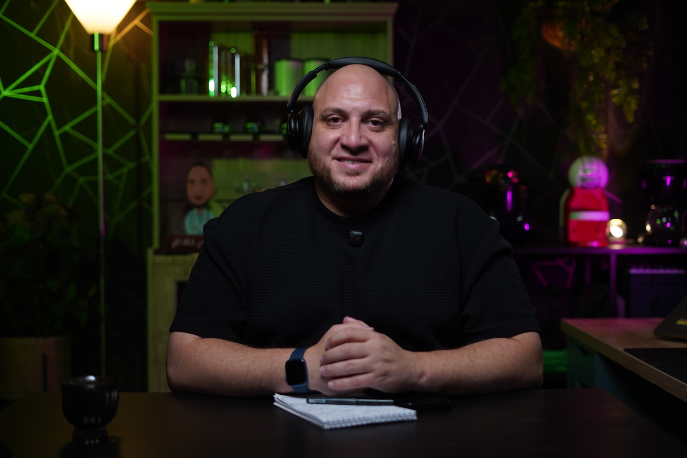

رفض المطالبات
Claim denials
تحليل الأسباب الجذرية وربط الترميز والتوثيق والسياسات قبل نقطة الرفض.
Root-cause analysis across coding, documentation and policy—before denial happens.
أكثر من 10 سنوات في قيادة دورة الإيرادات، التأمين الطبي، DRG، الترميز والتسعير—بخبرة سريرية ورؤية تشغيلية تضع الجودة والاستدامة في معادلة واحدة.
10+ years leading revenue cycle, medical insurance, DRG, coding and pricing—combining clinical judgment with operating discipline to improve both quality and sustainability.


Dr 3llam Studio · Riyadhبدأت الرحلة من الممارسة الطبية، ثم انتقلت إلى قلب المنظومة التي تربط الرعاية بالتوثيق والترميز والمطالبة والتحصيل. اليوم، أقود فرقًا ومشروعات تبني دورة إيرادات أكثر دقة وشفافية واستدامة.
My career began in clinical practice, then moved into the system connecting care, documentation, coding, claims and collection. Today, I lead teams and projects that build more accurate, transparent and sustainable revenue cycles.
أبسط تعقيدات الرعاية الصحية والتأمين لتصل المعلومة صحيحة، ويتحول القرار إلى أثر.
I simplify healthcare and insurance complexity so the right information becomes better decisions.
أتعامل مع دورة الإيرادات كمنظومة متصلة، من أول توثيق الحالة وحتى التحصيل والمصالحة.
I treat revenue cycle as one connected system—from clinical documentation to collection and reconciliation.
تحليل الأسباب الجذرية وربط الترميز والتوثيق والسياسات قبل نقطة الرفض.
Root-cause analysis across coding, documentation and policy—before denial happens.
تحسين مسار العمل والاتصال بين مقدم الخدمة والدافع والممارس الصحي.
Better workflows and clearer alignment between provider, payer and clinician.
تنظيف Charge Master وربط التكلفة بالتسعير والتعاقد ومراقبة الأداء.
Charge master governance, costing, pricing, contracting and performance control.
تفعيل CDI وDRG لتحويل التوثيق الدقيق إلى جودة سريرية وقيمة مالية عادلة.
Activating CDI and DRG so accurate records support clinical quality and fair value.
تصميم الهياكل والسياسات ومؤشرات الأداء، وبناء فرق قادرة على تشغيل منظومة كاملة وقابلة للتوسع.
Operating models, policy, KPIs and teams built for a complete, scalable revenue cycle.
التطبيق، خرائط الأكواد، التسعير، الجاهزية التشغيلية وإدارة التغيير.
Implementation, code mapping, pricing, operational readiness and change management.
رفع دقة واكتمال التوثيق السريري وربطه بالجودة والترميز والاستحقاق.
Improving documentation quality and connecting it to coding, care quality and entitlement.
خبرة في CPC وSNOMED CT وSBS ورقابة جودة المطالبات.
CPC, SNOMED CT, SBS and claims quality assurance expertise.


قيادة الترميز والامتثال، تطبيق DRG، إدارة Charge Master والتسعير والتكلفة وبرنامج CDI، مع إشراف مؤسسي على تحسين نزاهة دورة الإيرادات.
Leading coding and compliance, DRG implementation, charge master, costing, pricing and CDI—with corporate oversight of RCM integrity and improvement.
تأسيس قسم RCM، تطوير استراتيجية العقود والتأمين، وتجهيز الترميز والتسعير والتعاقد لفرع Jeddah Park.
Built an RCM department, strengthened payer strategy and prepared coding, pricing and contracts for the Jeddah Park branch.
إدارة دورة الإيرادات عبر 13 منطقة للهلال الأحمر، قيادة مشروع الحياة لستة مجمعات، وفرق تدقيق في 27 مستشفى بوزارة الصحة ومستشفى الملك فيصل.
Managed end-to-end RCM across 13 SRCA regions, led a six-polyclinic project and medical audit teams across 27 MOH hospitals and King Faisal Hospital.
إنشاء وتشغيل قسم جديد لدورة الإيرادات، توحيد السياسات، إدارة العقود وتقليل رفض المطالبات.
Established a new RCM department, standardized policy, managed payer contracts and reduced denials.
قاعدة سريرية مباشرة كوّنت فهمًا عمليًا للعلاقة بين الرعاية والمريض والتأمين.
Direct clinical experience that shaped a practical understanding of care, patients and insurance.
مزيج من الطب، التقنية الصحية، الإدارة والتمويل—لأن مشكلات القطاع المعقدة لا تحلها زاوية واحدة.
A blend of medicine, health technology, management and finance—because complex healthcare problems are never solved from one angle.
للنقاشات المهنية، فرص التحدث، التدريب، التعاون وصناعة المحتوى.
For professional conversations, speaking, training, collaboration and media.